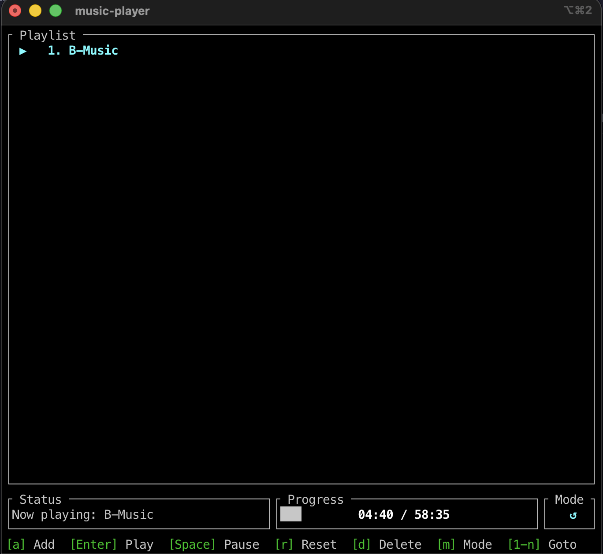
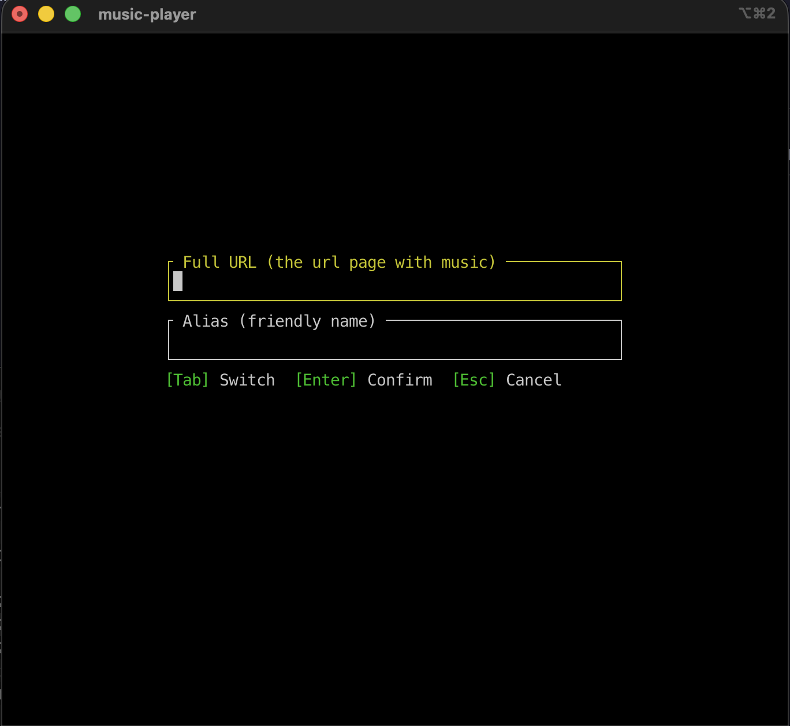
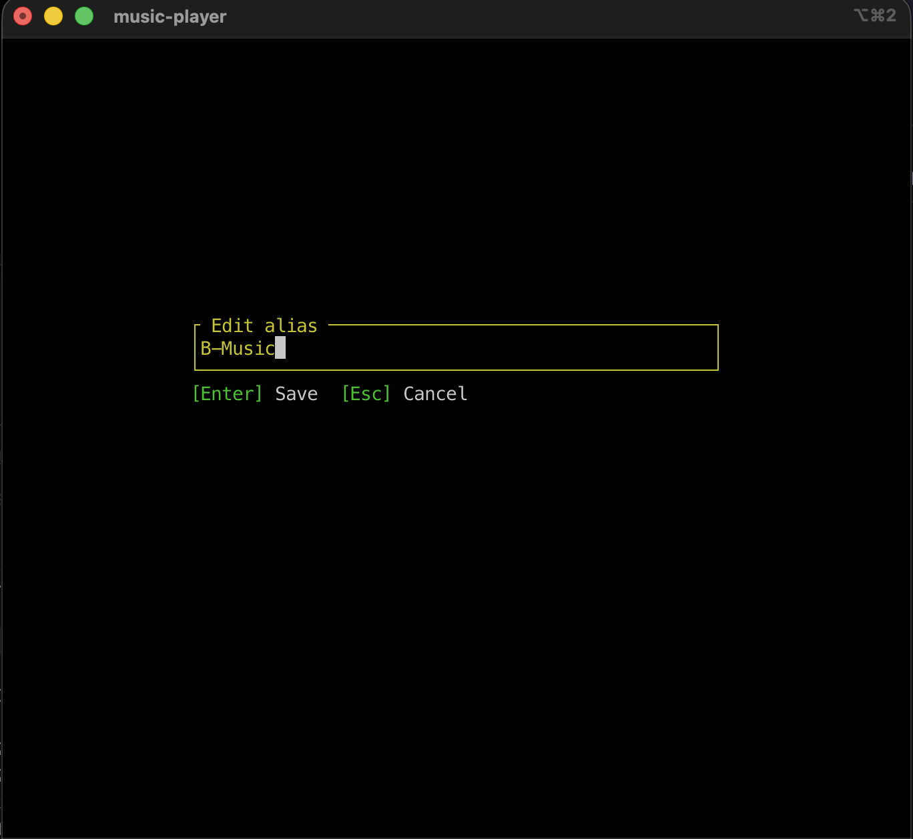
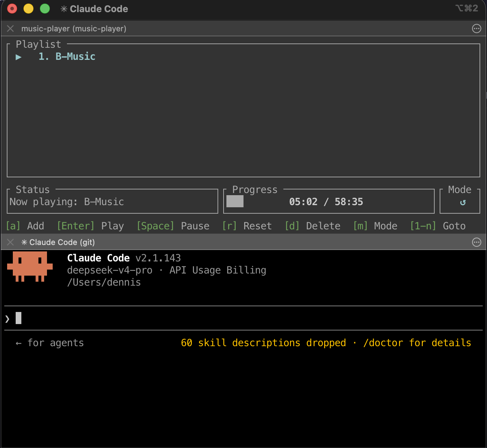
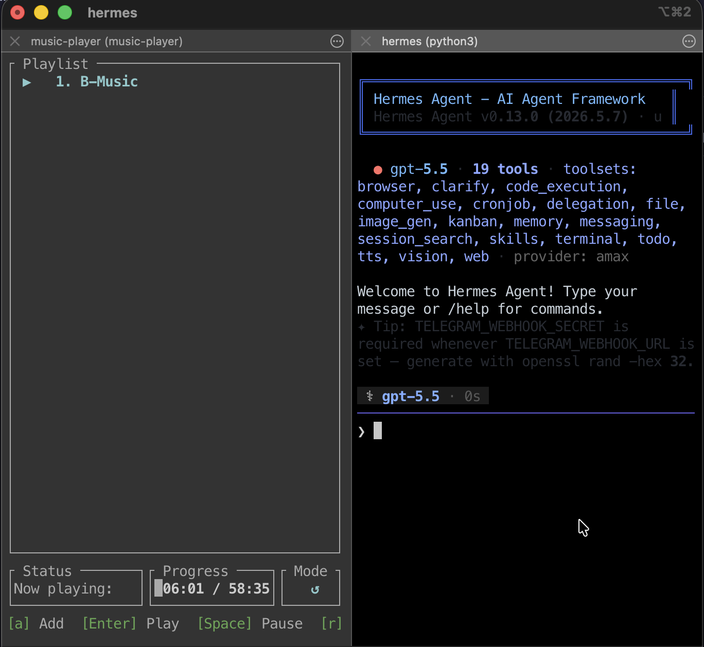

Stream audio from YouTube, Bilibili, SoundCloud, and hundreds more sites — directly in your terminal. No local files, no disk writes. Powered by yt-dlp and Rust.
In the age of AI coding, the command line is your battlefield. This is an immersive TUI music player that lets you stay right inside the Terminal — switch tracks and keep the music going with nothing but your keyboard, so your flow never breaks.
yt-dlp pipes audio directly into a shared buffer; rodio decodes and plays progressively. Playback starts before the download finishes.
Works with any URL yt-dlp supports — YouTube, Bilibili, SoundCloud, NicoNico, and hundreds more.
Add, delete, rename, and reorder songs. Persisted as JSON in your platform's config directory. Survives restarts.
Press a number key (1–9), then Enter to jump directly to a song. Rapid inputs are coalesced — only the last request plays.
Cycle between Sequential, Repeat One, and Shuffle with a single key press.
Automatically resumes from where you left off. Press r to restart from the beginning.
← / → to jump ±10 seconds. Real-time progress bar shows current and total time.
Linux, macOS, Windows. All it needs is Rust 1.85+ and yt-dlp installed on your system.
A clean TUI designed for efficiency — five screens for a fluid music experience.





Build from source or install directly from crates.io. Requires Rust 1.85+ and yt-dlp.
cargo install terminal-music-player
# Clone the repository git clone https://github.com/dennislan/terminal-music-player.git cd terminal-music-player # Build in release mode cargo build --release # The binary is at target/release/music-player ./target/release/music-player
# macOS brew install yt-dlp # Linux (Debian/Ubuntu) sudo apt install yt-dlp # Windows (scoop) scoop install yt-dlp
ffmpeg is not required. yt-dlp downloads AAC/m4a natively via -f bestaudio.
Entirely keyboard-driven. No mouse needed.
| Key | Action |
|---|---|
| Playlist Navigation & Playback | |
| ↑ / ↓ or k / j | Navigate playlist |
| Enter | Play selected song |
| 0–9 then Enter | Jump to song by number (1-based) |
| Space | Pause / Resume |
| ← / → | Seek −10s / +10s |
| r | Reset current song to 00:00 |
| m | Cycle playback mode (Sequential → Repeat One → Shuffle) |
| Playlist Management | |
| a | Add a URL |
| e | Edit selected song's alias |
| d | Delete selected song (with confirmation prompt) |
| Alt+↑ / Alt+↓ | Move song up / down in the playlist |
| Other | |
| q | Quit (saves position and playlist) |
| Esc | Cancel number input / dismiss dialog |
The player runs in a dedicated background thread, communicating with the TUI via mpsc channels.
src/ ├── main.rs Entry point, terminal setup, event loop, key dispatch ├── lib.rs Library crate root (exposes modules for integration tests) ├── app.rs Application state (App), screen management, input handling ├── ui.rs ratatui rendering — five screens ├── stream.rs yt-dlp subprocess, streaming buffer ├── player.rs Background thread, mpsc channels, rodio playback └── playlist.rs Song & Playlist structs, JSON persistence
Commands (UI → Player)
Play(Song)
Stop
PauseResume
SeekTo(f64)
Events (Player → UI)
Buffering
Started
Position
Paused / Resumed
Finished / Stopped / Error
Heartfelt thanks to every sponsor — your generosity drives this project forward.
If you find this project helpful, your support keeps the late-night coding fueled.